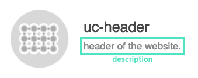

Document
To convert partial templates to component-styleguides, you should leave a comment like below.
<!--@doc
# @category atom
# @name card
# @css ./card.scss
# @desc it's just a card component
-->@category
There are 4 types of category in Atomic Lab
Atom
Premitive components such as labels, buttons, inputs etc. These components can't be used without being mixed to be molecule/organism components.
Molecule
Mixed components built with several premitive components. eg) Form component built with label, button and input component.
Organism
organisms are complex components several molucule/atom components joined together. eg) Header component built with logo, title and form component
Template
A website wireframe made with organism/molecule/atom components.
@name
You can give each component a name for your reference. By giving them names, you can easily find components.
@css
If you want to show css source of the component, you should write the path from the template file.
@desc
You can write a description of the component.
